Studio Ludo.
Studio Ludo.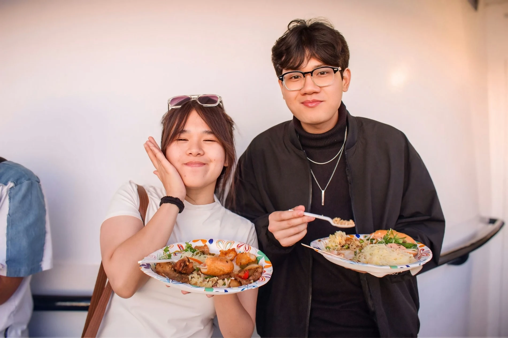
Les jeunes adultes
En coloc ou en couple, le vendredi soir a son menu. Une pizza facile à partager, le match et chacun à sa place sur le canapé. La recette peut évoluer tant que le rituel tient.
HappyVore · Campagne 360°
Pour ma candidature au poste de concepteur-rédacteur chez HappyVore, j’ai imaginé une campagne sur tout ce qu’on aime garder à table quand un ingrédient change.
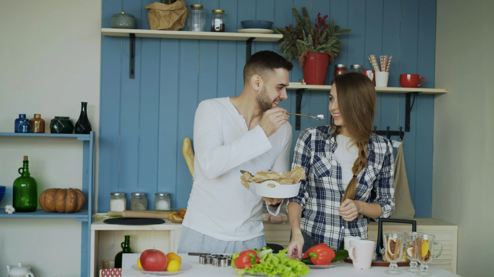
Stratégie créative

En coloc ou en couple, le vendredi soir a son menu. Une pizza facile à partager, le match et chacun à sa place sur le canapé. La recette peut évoluer tant que le rituel tient.
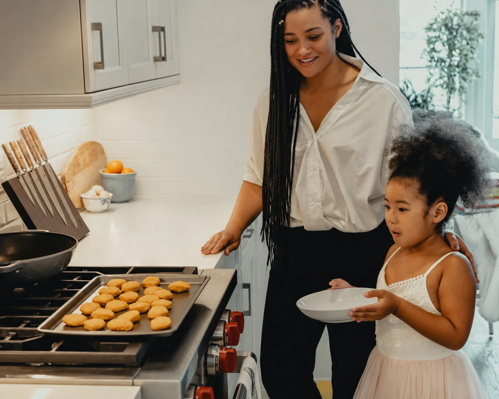
Faire plaisir à plusieurs générations avec un seul plat, c’est déjà toute une recette. Le végétal trouve sa place dans les plats que tout le monde réclame, du barbecue aux boulettes du dimanche.
Big Idea
« Rien ne change » sonne comme un constat. « Enfin, presque » invite à regarder une seconde fois. Le père garde ses pinces, mamie garde sa recette. Ce qui a changé se trouve déjà dans leur assiette.
Concepts vidéo · 15 à 30 secondes
Chaque film part d’un geste familier. L’emballage entrouvert, posé dans le décor, laisse découvrir le détail végétal.
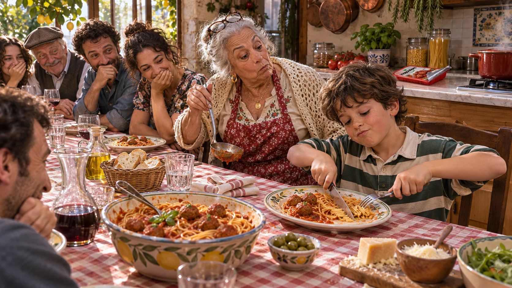
Familles · Boulettes
Mamie sert ses boulettes. Le petit sort un couteau pour couper ses spaghettis. Sa louche se fige. Derrière elle, le paquet de boulettes végétales est déjà ouvert. Certaines libertés passent mieux que d’autres.
Toujours les mêmes traditions. Enfin, presque.
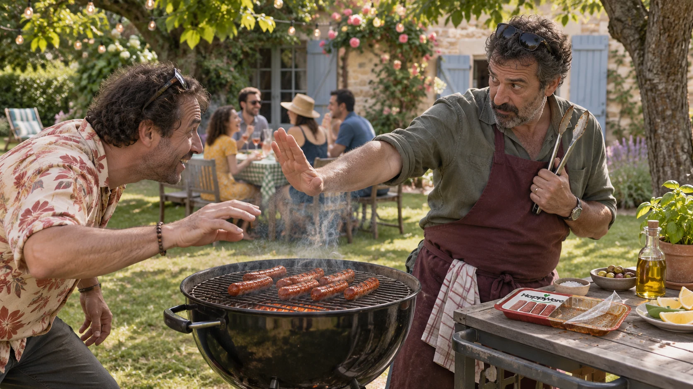
Familles · Merguez
Un invité tend la main pour retourner une merguez. Le père serre les pinces contre son tablier. Les merguez ont changé, le chef de poste tient toujours à ses prérogatives.
Toujours le même rituel. Enfin, presque.
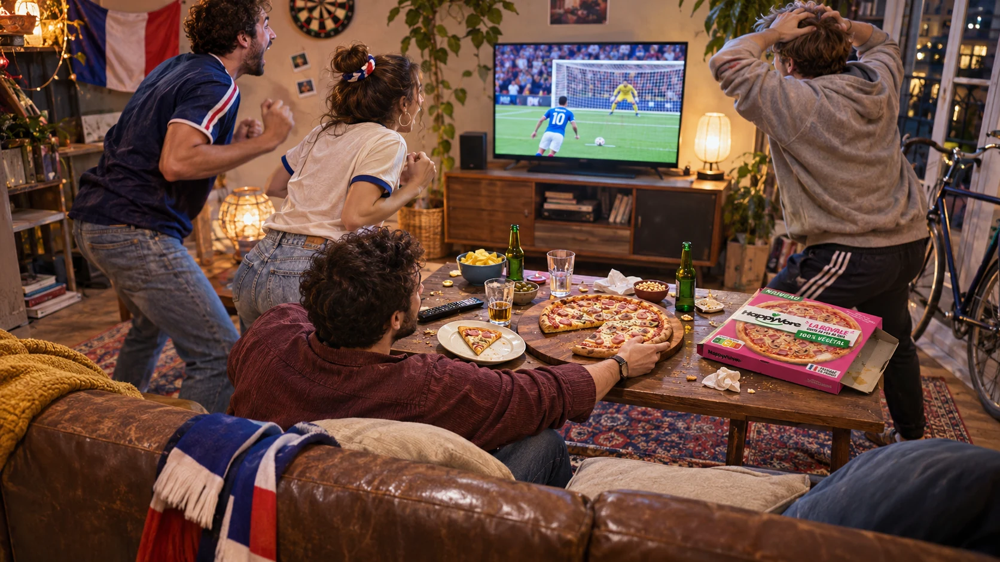
Jeunes adultes · Pizza
Au moment du penalty, tous les regards se tournent vers l’écran. Enfin, presque. Un colocataire profite de la diversion pour se servir. Sur la table basse, la boîte rose de la Royale livre le deuxième indice.
Toujours le même rendez-vous. Enfin, presque.
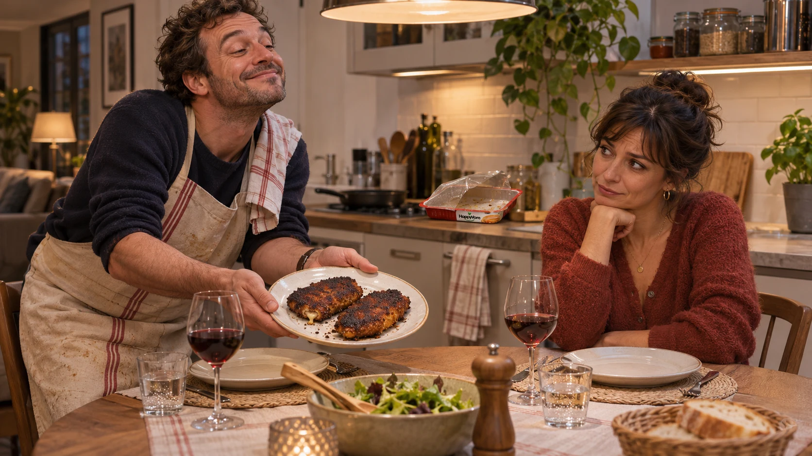
Jeunes adultes · Cordons bleus
Il soulève le plat avec l’assurance d’un grand chef. Sa compagne regarde la panure noircie. Il est passé aux cordons bleus végétaux. Pour la cuisson, il a gardé ses habitudes.
Toujours aussi nul en cuisine. Enfin, presque.
Affichage extérieur et numérique
Du ticket de caisse aux miettes dans l’assiette, cinq affiches donnent un second rôle au produit. Une même signature invite à revenir sur le détail.
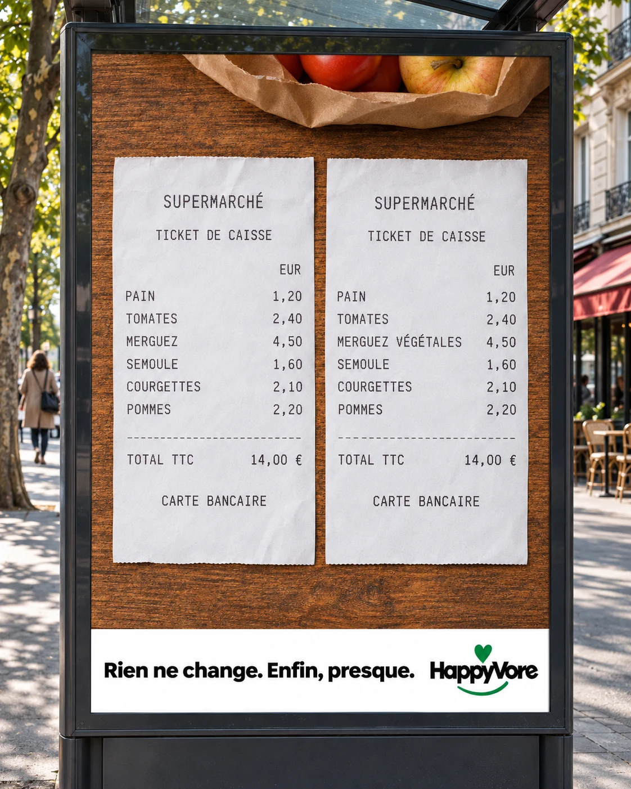
Mobilier urbain
Pain, tomates, semoule… Sur le second ticket, une précision se glisse à côté des merguez. Elles sont végétales.
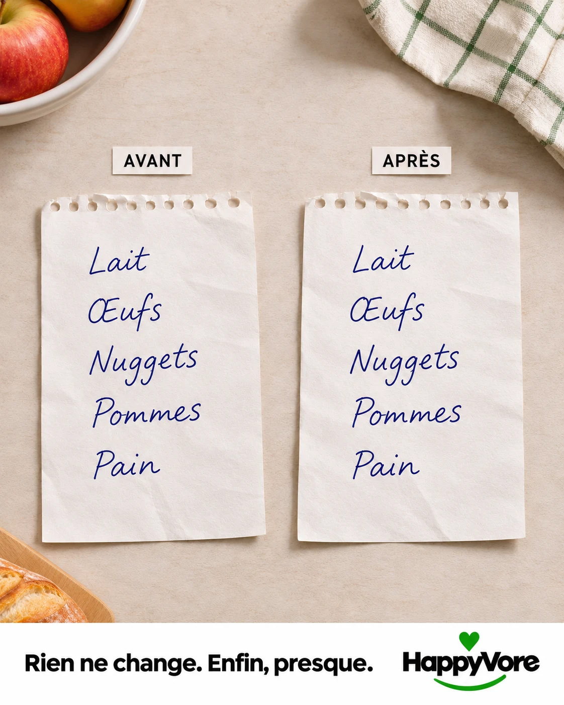
Les courses
On peut continuer d’écrire « nuggets » sur la liste. Le choix du végétal se fait au rayon.
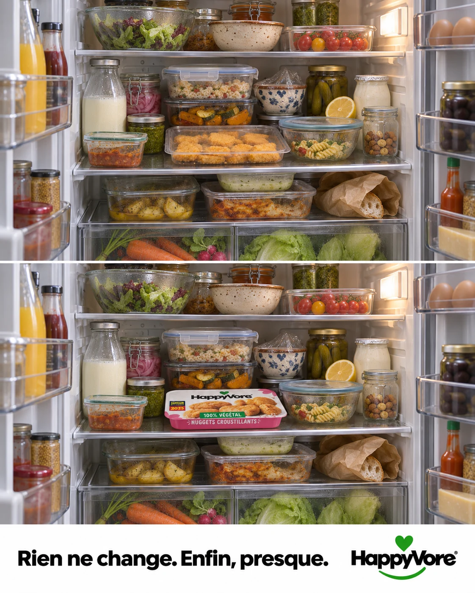
Le rangement
Entre les restes et les cornichons, les nuggets végétaux trouvent leur place sur la même étagère.
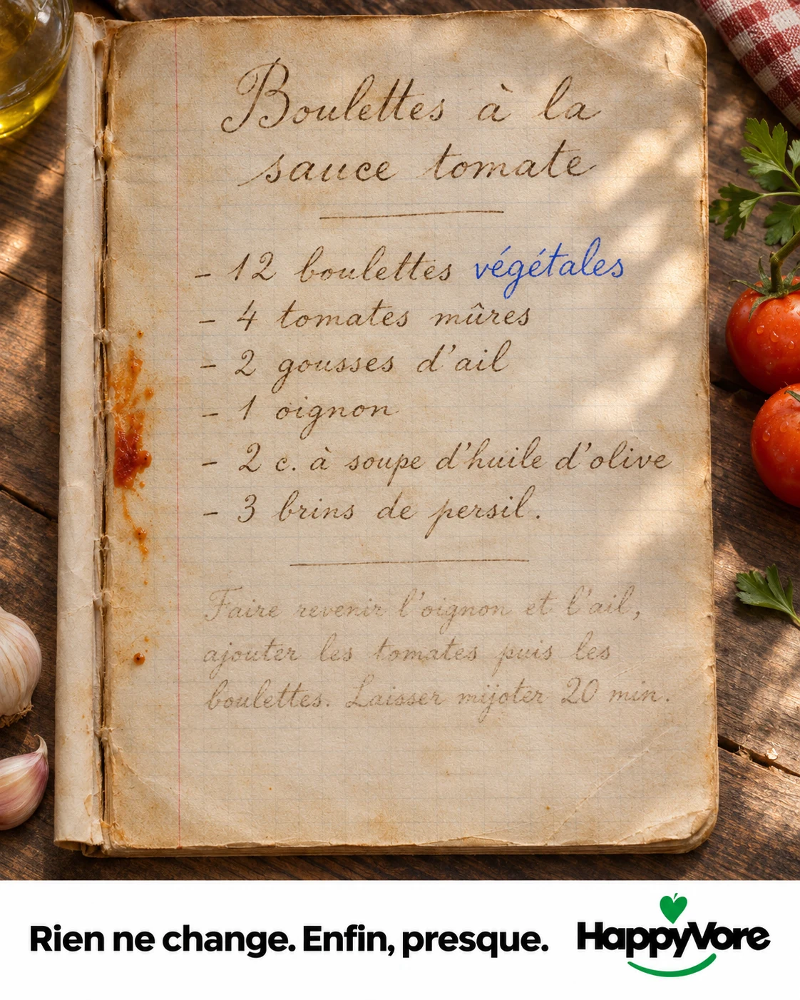
La préparation
Quatre tomates, deux gousses d’ail, douze boulettes. À côté de l’écriture passée, quelqu’un a ajouté « végétales » au stylo bleu.
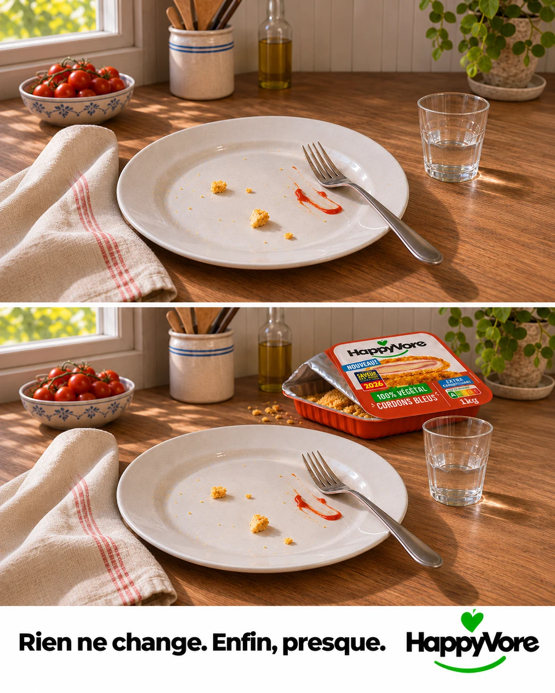
La dégustation
Le repas est terminé. Il faut regarder derrière l’assiette, du côté du paquet entrouvert, pour savoir ce qu’on a mangé.
Activation en point de vente
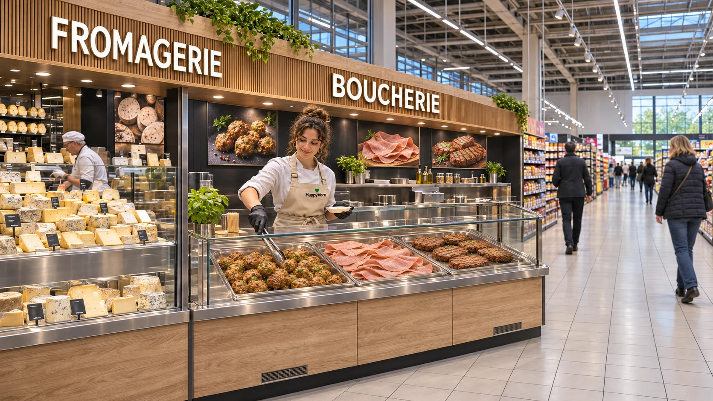
À côté de la fromagerie, on retrouve la vitrine, le tablier et les conseils de cuisson. Au comptoir HappyVore, les boulettes, les tranches de jambon et les steaks proposés à la dégustation sont tous végétaux.
J’ai imaginé ce comptoir éphémère pour prolonger la campagne en magasin. On peut poser sa question habituelle, goûter une bouchée et repartir avec une idée pour le dîner.
Activation participative
Certaines habitudes ont la vie très dure.
Les pâtes au sucre ont leurs adeptes. Et leurs détracteurs, souvent assis à la même table. Avec #TouchePasÀMonAssiette, HappyVore invite chacun à défendre ses petites manies et laisse une place à tous les goûts.
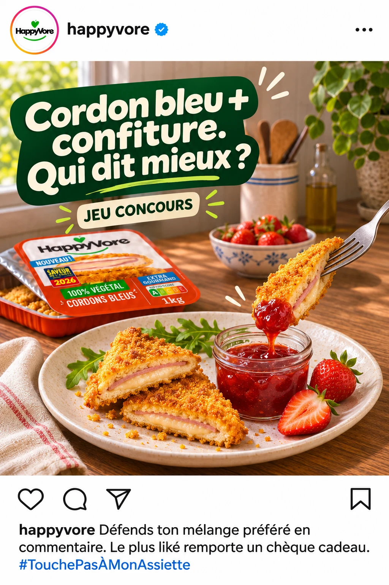
Instagram · Jeu concours
Cordon bleu + confiture. Qui dit mieux ?
HappyVore ouvre le bal avec son propre mélange. Chacun défend le sien en commentaire. Dans le concours imaginé, le commentaire le plus aimé remporte un chèque cadeau.
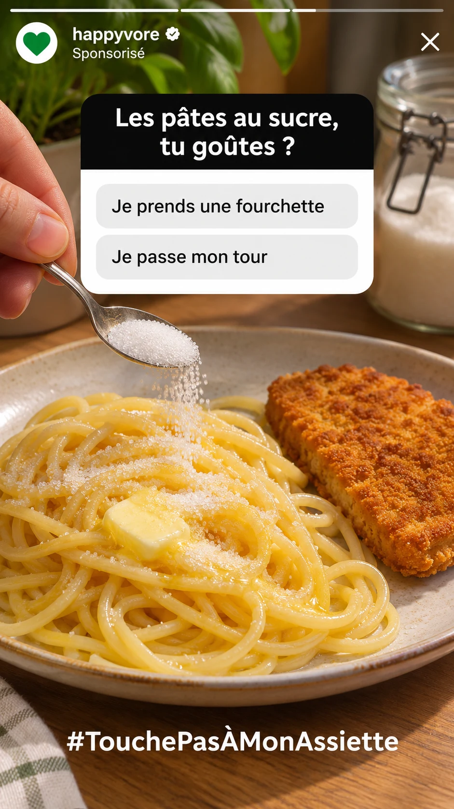
Instagram · Story sponsorisée
Les pâtes au sucre, tu goûtes ?
Une cuillère de sucre au-dessus des spaghettis. La marque propose deux réponses, « Je prends une fourchette » ou « Je passe mon tour ». Un geste suffit pour entrer dans le débat.
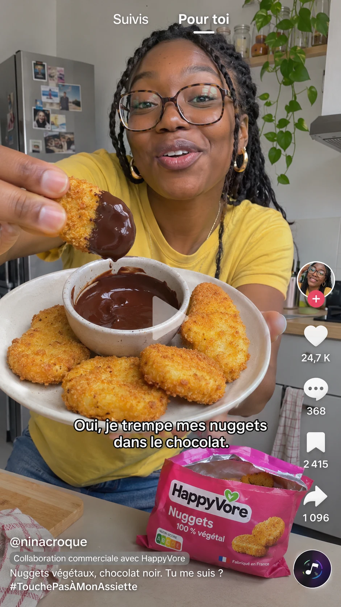
TikTok · Collaboration créateur
« Oui, je trempe mes nuggets dans le chocolat. »
Face caméra, une créatrice tend son assiette et plonge un nugget végétal dans du chocolat noir. « Tu me suis ? » Le ton est donné pour raconter ses propres associations en commentaire. Le profil et les compteurs illustrent le concept.